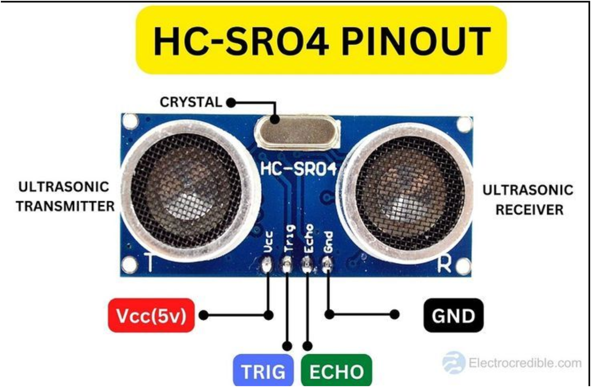
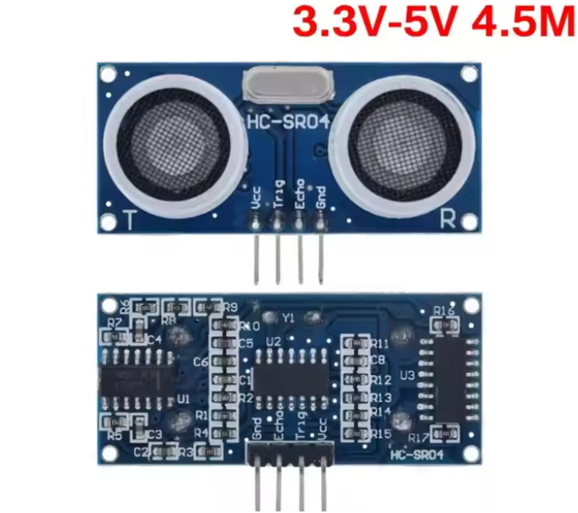

HC-SR04 Ultrasonic Sensor
 Measures distance accurately using sound waves.
Key Information
- Type: Ultrasonic Distance Sensor
- Operating Voltage: 3.5-5V DC
- Detection Range: 2cm to 400cm (approx. 0.8 inches to 13 feet)
- Accuracy: Up to 3mm
- Interface: 4 pins (VCC, Trig, Echo, GND)
- Working Current: 15mA
- Effective Angle: <15 degrees
About the HC-SR04 Sensor
The HC-SR04 Ultrasonic Sensor is a popular module for non-contact distance measurement. It uses sonar to determine the distance to an object, much like bats or dolphins. It operates by sending out a high-frequency sound pulse and then measuring the time it takes for the echo to return.
It has four pins: VCC (power), GND (ground), Trig (trigger), and Echo (receive). The Trig pin sends out the ultrasonic burst, and the Echo pin goes high when the echo is detected, allowing a microcontroller to calculate the time of flight and thus the distance.
Common applications include obstacle avoidance robots, level sensing in tanks, parking sensors, and automated door systems. Its low cost and ease of use with Arduino make it a favorite for many DIY projects